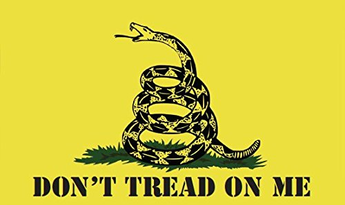
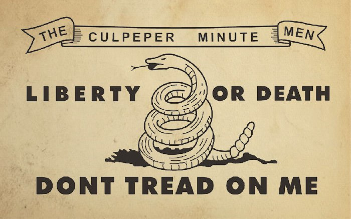
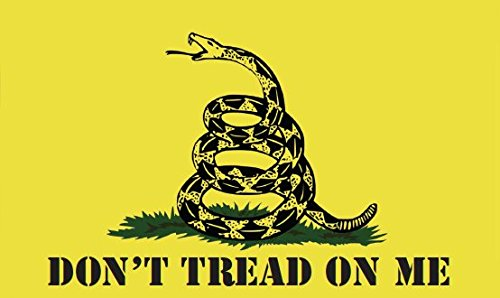
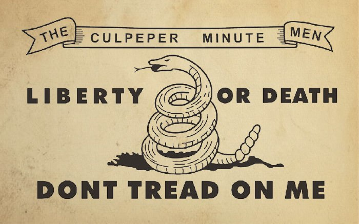
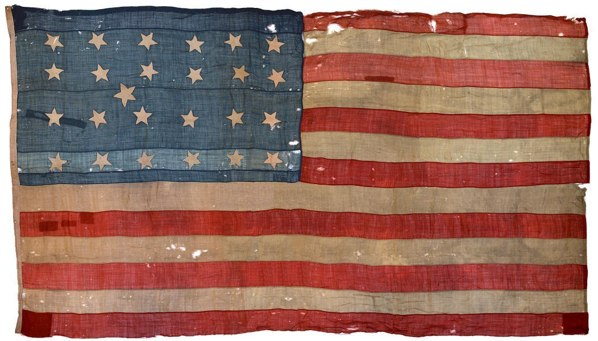
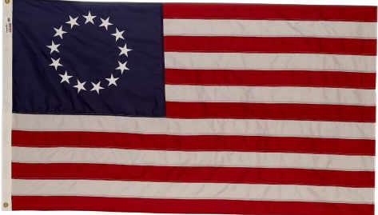
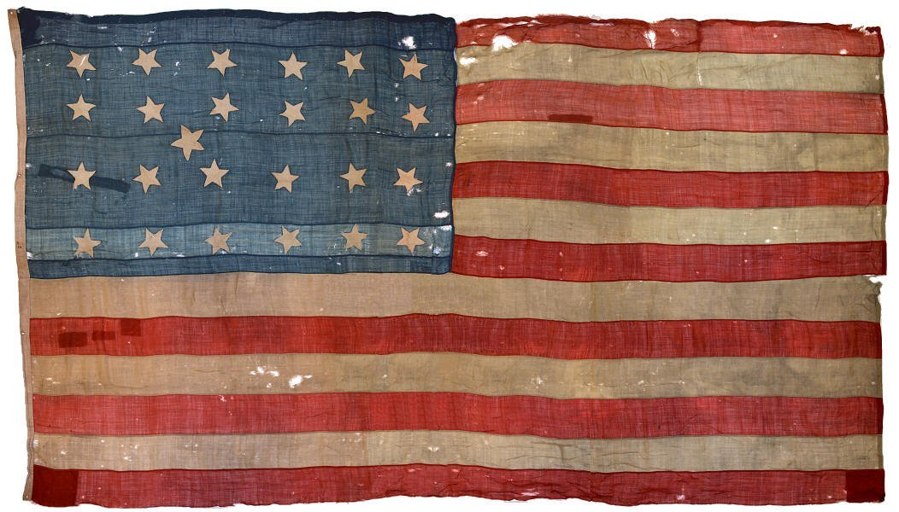
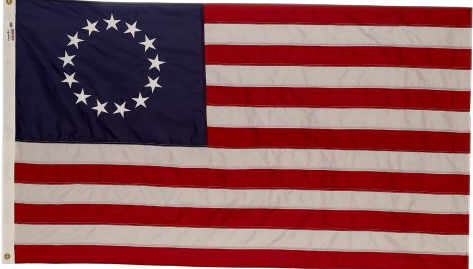

History of Don't Tread On America
The Gadsden Flag
The Gadsden flag is a historical American flag with a yellow field depicting a rattlesnake coiled and ready to strike. Positioned below the rattlesnake are the words "DONT TREAD ON ME."[note 1] The flag is named after American general and politician Christopher Gadsden (1724–1805), who designed it in 1775 during the American Revolution. It was used by the Continental Marines as an early motto flag, along with the Moultrie flag.
Snake Symbolism
The timber rattlesnake can be found in the area of the original Thirteen Colonies. Its use as a symbol of the American colonies can be traced back to the publications of Benjamin Franklin. In 1751, he made the first reference to the rattlesnake in a satirical commentary published in his Pennsylvania Gazette. It had been the policy of Great Britain to send convicted criminals to the Americas, so Franklin suggested that they thank the British by sending rattlesnakes to England.
In 1754, during the French and Indian War, Franklin published his famous woodcut of a snake cut into eight sections. It represented the colonies, with New England joined together as the head and South Carolina as the tail, following their order along the coast. Under the snake was the message "Join, or Die". This was the first political cartoon published in an American newspaper.
As the American colonies came to identify more with their own communities and the concept of liberty, rather than as vassals of the British empire, icons that were unique to the Americas became increasingly popular. The rattlesnake, like the bald eagle and American Indian, came to symbolize American ideals and society.
As the American Revolution grew, the snake began to see more use as a symbol of the colonies. In 1774, Paul Revere added Franklin's iconic cartoon to the nameplate of his paper, the Massachusetts Spy, depicted there as fighting a British dragon. In December 1775, Benjamin Franklin published an essay in the Pennsylvania Journal under the pseudonym American Guesser in which he suggested that the rattlesnake was a good symbol for the American spirit:
I recollected that her eye excelled in brightness, that of any other animal, and that she has no eye-lids—She may therefore be esteemed an emblem of vigilance.—She never begins an attack, nor, when once engaged, ever surrenders: She is therefore an emblem of magnanimity and true courage.—As if anxious to prevent all pretensions of quarreling with her, the weapons with which nature has furnished her, she conceals in the roof of her mouth, so that, to those who are unacquainted with her, she appears to be a most defenseless animal; and even when those weapons are shown and extended for her defense, they appear weak and contemptible; but their wounds however small, are decisive and fatal:—Conscious of this, she never wounds till she has generously given notice, even to her enemy, and cautioned him against the danger of stepping on her.—Was I wrong, Sir, in thinking this a strong picture of the temper and conduct of America?
The rattlesnake symbol was first officially adopted by the Continental Congress in 1778 when it approved the design for the official Seal of the War Office (at that time and for many years thereafter, the War Office was a term associated with the Headquarters of the Army). At the top center of the Seal is a rattlesnake holding a banner which says: "This We'll Defend". According to the US Army's Institute of Heraldry, "'This We'll Defend,' on a scroll held by the rattlesnake is a symbol depicted on some American colonial flags and signifies the Army's constant readiness to defend and preserve the United States.' This design of the War Office Seal was carried forward—with some minor modifications—into the subsequent designs for the War Department's Seal, and the Department of the Army's Seal, Emblem and Flag. As such, the rattlesnake symbol has been in continuous official use by the US Army for over 236 years.
 


